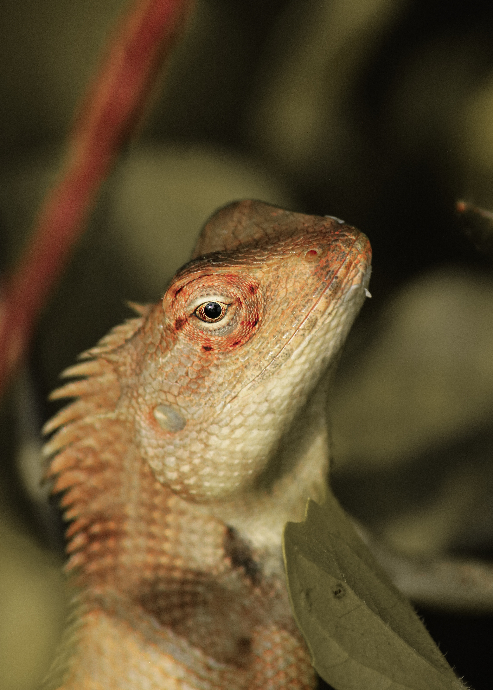

Chameleons come in a variety of sizes, with the smallest species, such
as the Brookesia micra, reaching only around an inch in length, while
the largest, the Parson's chameleon, can grow up to two feet long. They
are known for their ability to change color, which they use for
camouflage and communication. The color changes are caused by pigments
in the skin called chromatophores, which expand or contract to reveal
different colors.
Chameleons are also known for their large, bulging eyes, which are
capable of moving independently of each other. This allows them to have
360-degree vision and to focus on two different objects at the same
time. They also have long tongues, which they use to catch insects and
other small prey.
While chameleons make interesting and unique pets, they do have specific
needs that must be met in order to ensure their well-being. They are
tropical animals and require a warm, humid environment, as well as a
diet of live insects. They are also arboreal, which means they like to
climb and perch, so a tall cage with branches and plants is necessary.
It is important to research the specific species of chameleon you are
considering as a pet, as their care requirements can vary greatly. For
example, some species are more active during the day, while others are
nocturnal. Some species also have specific humidity and temperature
requirements, while others are more tolerant of a wide range.
However, for those who are willing to invest the time and effort into
providing the proper care for a chameleon, these fascinating creatures
can make a unique and rewarding pet. They are also relatively
low-maintenance and can be left alone for extended periods, making them
a good choice for busy people.
However, for those who are willing to invest the time and effort into providing the proper care for a chameleon, these fascinating creatures can make a unique and rewarding pet. They are also relatively low-maintenance and can be left alone for extended periods, making them a good choice for busy people.
On the other hand, to others, chameleons are not suitable as pets due to the fact that they are wild animals and removing them from their natural habitat can have a negative impact on the population and ecosystem. They require specific conditions that may not be easy to replicate in captivity, which can lead to health problems and reduced lifespan.
In addition, many chameleons are captured from the wild and sold as pets, which can have a negative impact on wild populations. A lot of people are not willing to provide the specific care and environment that chameleons need, which can lead to neglect and abuse. It's important to weigh the pros and cons before deciding to bring one home, and consider the fact that chameleons are better appreciated in their natural habitat rather than kept as pets.